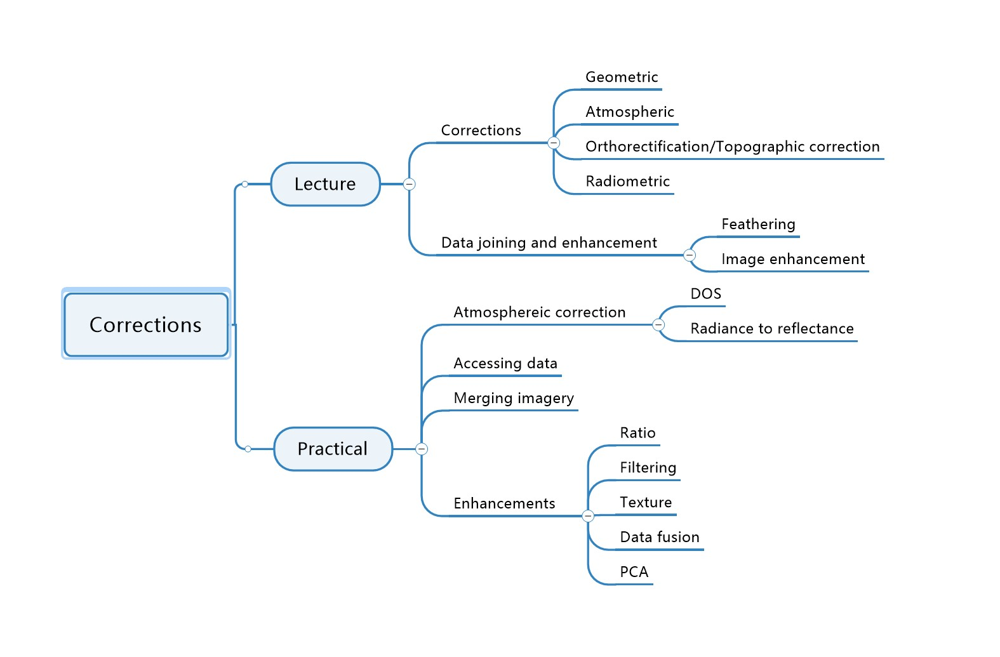
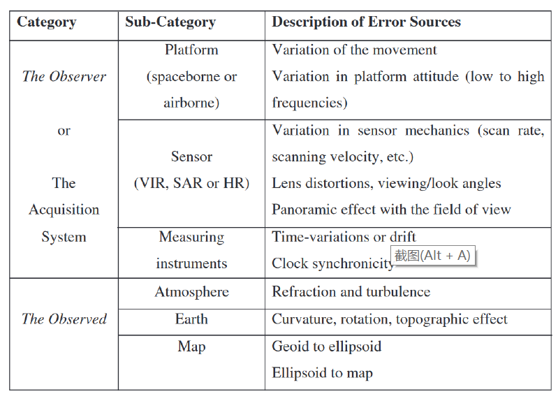
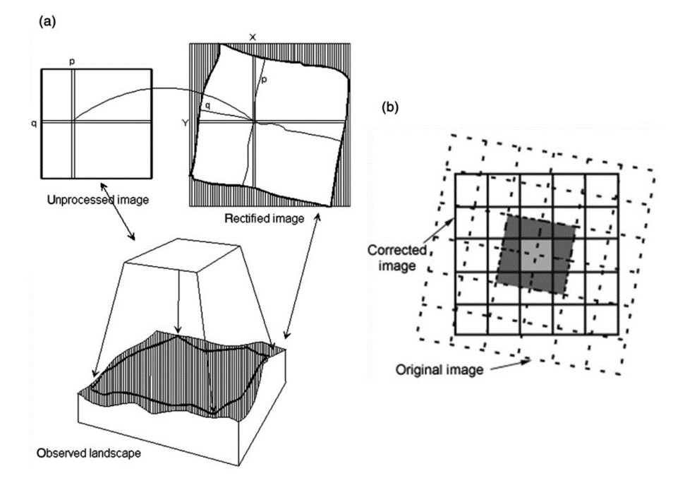
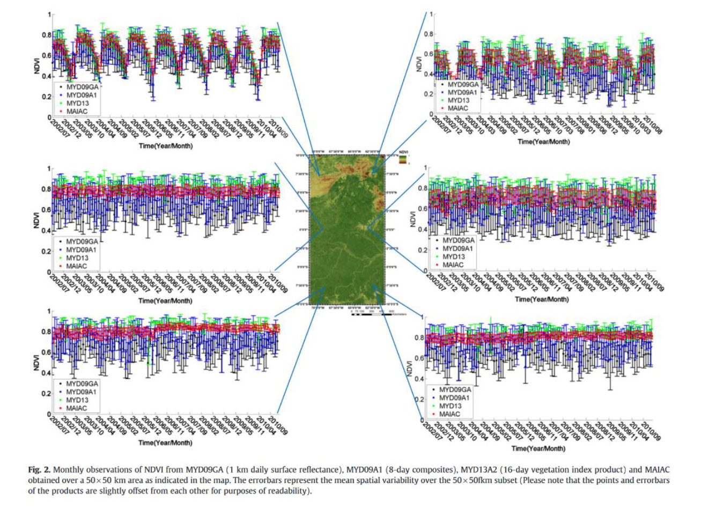
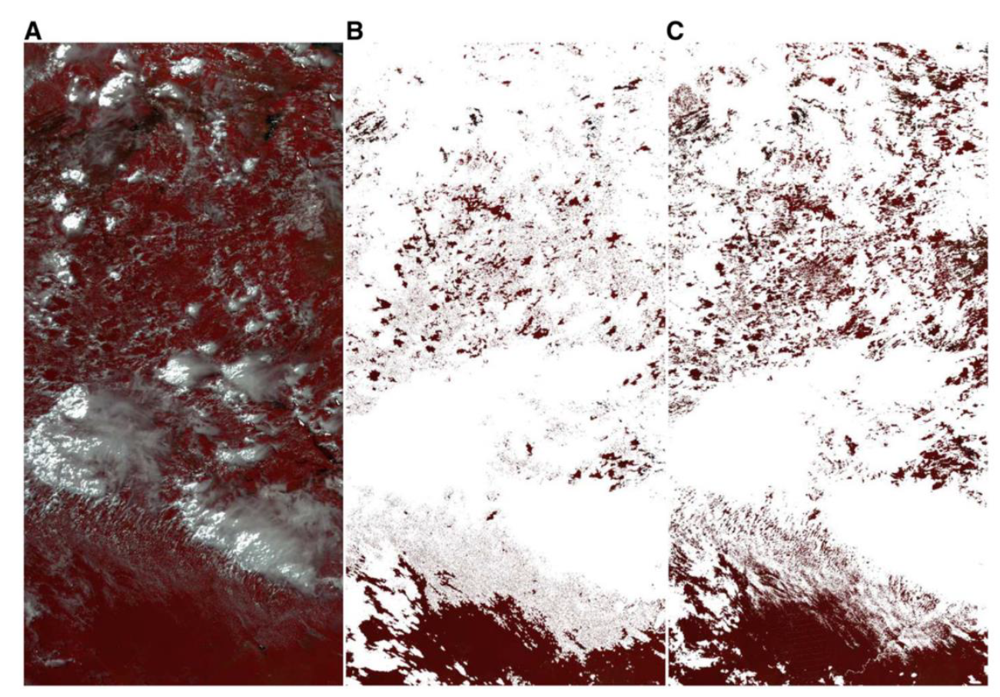

5 Corrections
5.1 Summary
Due to the spatial, spectral, temporal and radiometric resolution limitations of remote sensing systems, it is difficult to accurately record information on complex land surfaces and therefore errors are inevitable in the process of data acquisition. These errors reduce the quality of the remote sensing data and the accuracy of the image analysis. Therefore it is necessary to pre-process the remote sensing images before the actual image analysis and processing. In this week, we mainly focused on corrections and data joining and enhancement. In corrections part, it includes geometric correction, atmospheric correction, orthorectification/topographic correction and radiometric correction. Image joining can help us combine several image for the analysis of bigger area and image enhancements can improve the visual appearance or results. In the practical, we tried to use landsat data to do some analysis, first we should correction and merge image, and then highlight the area with healthy vegetation. Finally, we did PCA analysis.

5.2 Application
In the processing and analysis of remote sensing imagery, raw remote sensing data often contain such severe geometric distortions that they are difficult to integrate with other data. Each EO image acquisition system produces unique geometric distortions in its original images, so that the geometry of these images in their own local coordinate system does not correspond to other images, terrain and the user’s particular map projection. The sources of distortion can be divided into two main categories: the observer, the acquisition system, and the observed. In addition to these distortions, distortions associated with map projections need to be considered (Toutin 2011).

Pre-processing is the initial and most basic image operation, correcting image distortions that occur during the image data acquisition process and restoring image quality. The elimination of geometric distortion is called geometric correction and the elimination of radiation distortion is called radiometric correction. In practice, atmospheric correction and topographic correction are usually carried out. The diagram below is an example of a geometric correction, the operations of which require geometrical mathematics and elevation information for better geolocation (Toutin 2011).

Observations of tropical rainforest vegetation dynamics using satellite-based remote sensing data are presented in a paper. There is some uncertainty in the data due to atmospheric corrections and cloud cover. In their study they used the Moderate Resolution Imaging Spectroradiometer (MODIS) and derived composites (MYDO9A1, MCD43A4 and MYD13A2 - vegetation indices) on board the Aqua satellite with results obtained from the Atmospheric Multi Angle Implementation for Correction (MAIAC) algorithm to assess these uncertainties. MAIAC employs a new cloud screening technique, as well as a new aerosol retrieval and atmospheric correction procedure based on time series and spatial analysis. Their results show a considerable improvement in surface reflectance and a 10-fold reduction in image noise levels using the MAlAC treatment(Hilker et al. 2012).

Monthly observations of NDVI from MYD09GA (1 km daily surface reflectance), MYD09A1 (8 day composites),MYD13A2 (16 day vegetation index product) and MAIAC obtained over a 50 × 50 km area as indicated in the map. The er rorbars represent the mean spatial variability over the 50 × 50fkm subset (Please note that the points and errorbars of the products are slightly offset from each other for purposes of readability).

Comparison of MYD09/MYD35 and MAIAC cloud mask. (A) False color infrared image acquired over the study area on July 16, 2002. (B) MYD09/MYD35 derived cloud mask overlaid on top of the same image (C)MAIAC derived c loud mask.
For image mosaics, when our study area exceeds the coverage of a single remote sensing image, it is often necessary to stitch together two or more images to form a larger image or series of images that cover the whole area, and this is the process of image mosaics.
The goal of image enhancement is to highlight relevant thematic information and improve the visual impact of the image; the goal of image transformation is to make it easier for the analyst to identify the content of the image and extract more useful information from it. Both are usually carried out after image correction and reconstruction, particularly where various types of noise in the original image must be removed.
5.3 Personal reflection
This week I have been learning how to pre-process remote sensing images, including image correction, image mosaicing and enhancement. In this I learnt that there are so many reasons for distortion in remote sensing images and the need to pre-process images. After doing the calculations for ndvi, I found that the image enhancement process was more scientific than I had previously thought.